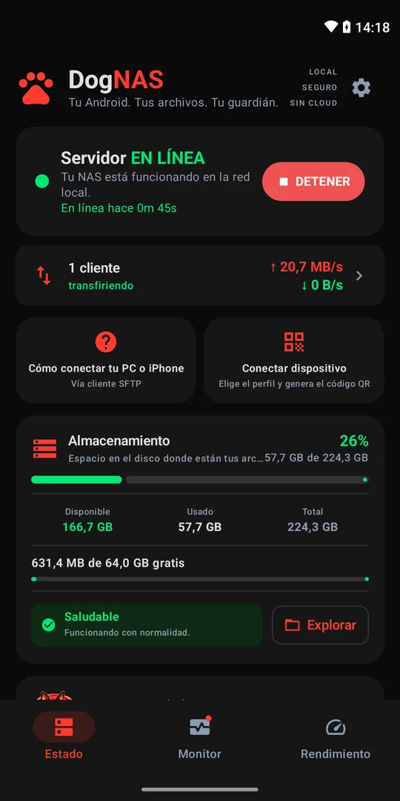
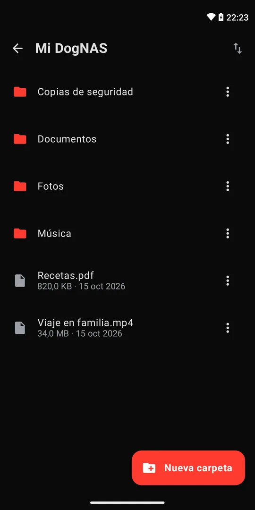
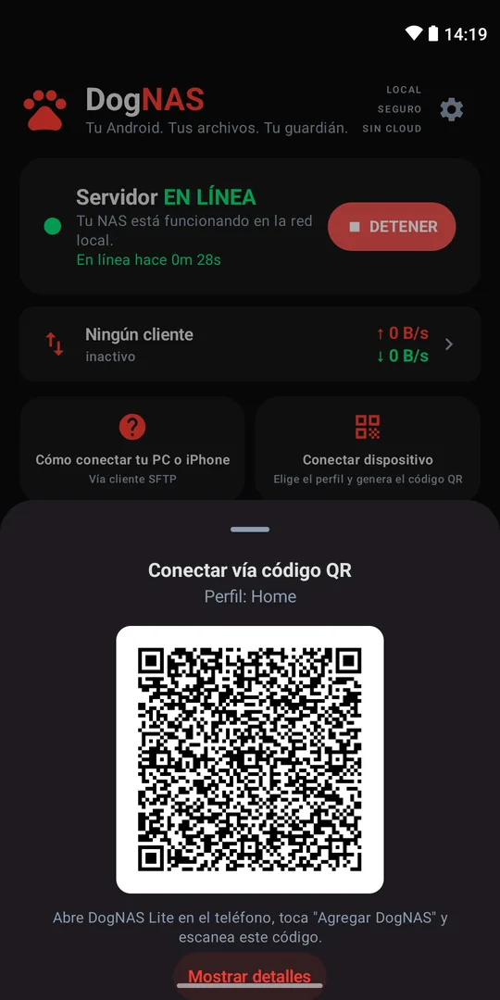
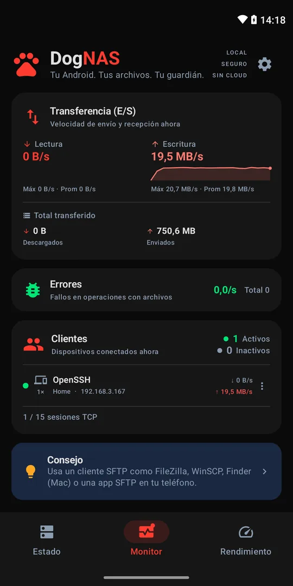
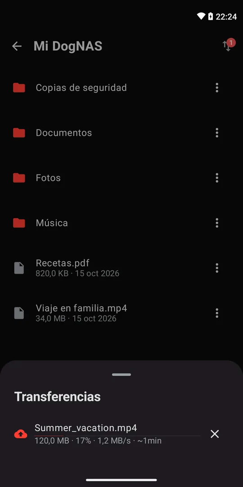

Tus archivos en casa.
DogNAS convierte un Android que ya tienes en un almacenamiento privado para tu casa: tus archivos se quedan contigo, en tu Wi-Fi, sin nube y sin cuotas mensuales.


Cómo funciona
Enciende el servidor
Instala DogNAS en el Android que guardará los archivos — en el dispositivo, una tarjeta SD o un disco USB — y toca Iniciar.
Conecta tu teléfono
Genera el código QR de un perfil y escanéalo con DogNAS Lite. Cada perfil tiene su PIN y su espacio.

Usa tus archivos
Navega, sube y descarga por el Wi-Fi de casa. PC y Mac se conectan por SFTP.
Sin nube
Los archivos viajan solo entre tus dispositivos, en tu red, cifrados.
Perfiles para la familia
Cada perfil tiene su propio espacio y su PIN.
Sin cuenta ni anuncios
Sin registro, sin anuncios, sin recopilación de datos.
Reutiliza un Android
Ese teléfono olvidado en un cajón se convierte en el almacenamiento de casa.
Sigue todo


Gratis para empezar
| Gratis | Pro | |
|---|---|---|
| Almacenamiento | 64 GB | Todo el dispositivo |
| Perfiles | Casa + 2 | Ilimitados |
| Dispositivos vinculados | 3 | Ilimitados |
| Rendimiento | Bueno | Máximo optimizado |
| Con la app cerrada | Se pausan | Continúan |
| Tras reiniciar | Toca para iniciar | Se inicia solo |
DogNAS Pro: compra única, sin suscripción. DogNAS Lite siempre es gratis.
Dos apps
DogNAS
El servidor: instálalo en el Android que guardará los archivos.
DogNAS Lite
La app de acceso: instálala en tu teléfono para ver, subir y descargar archivos.